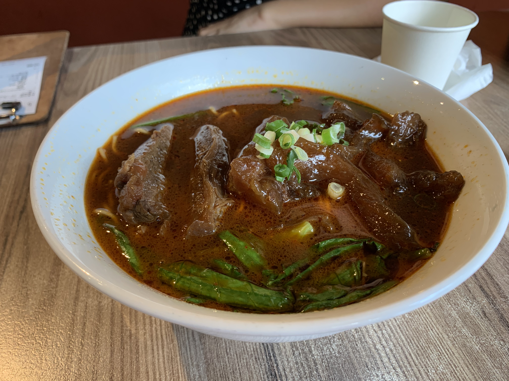
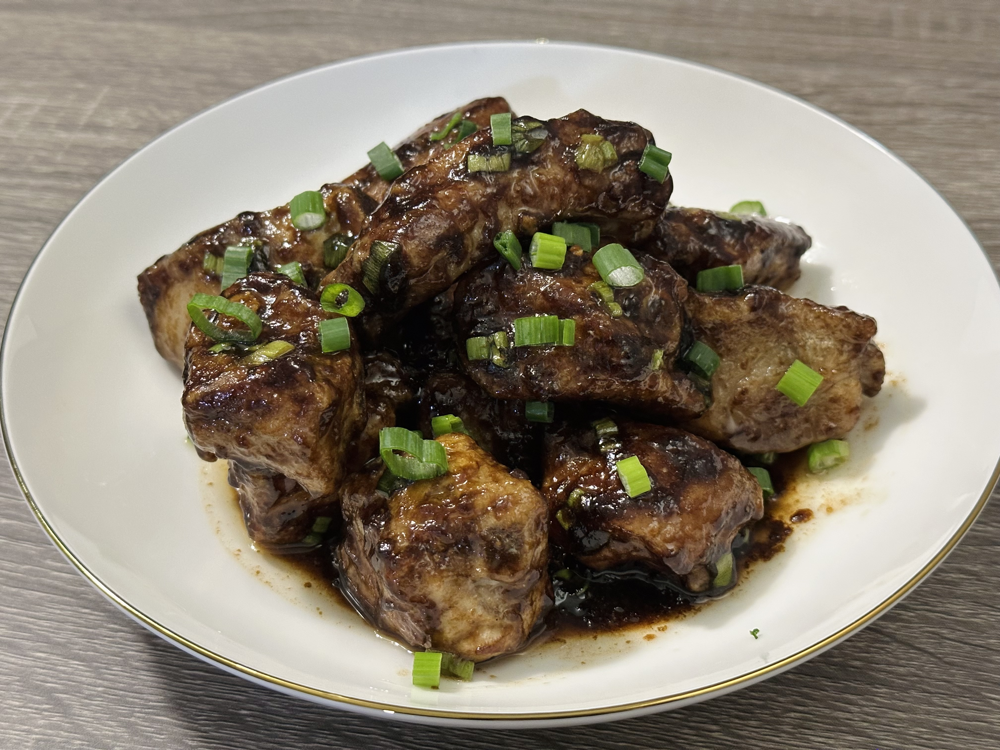
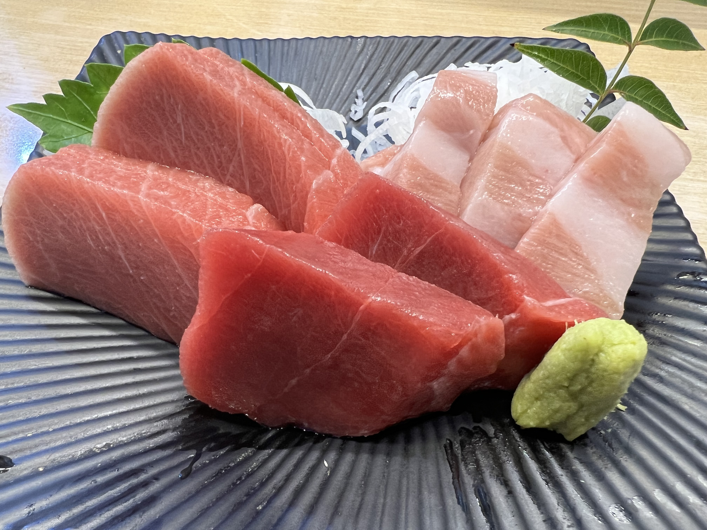
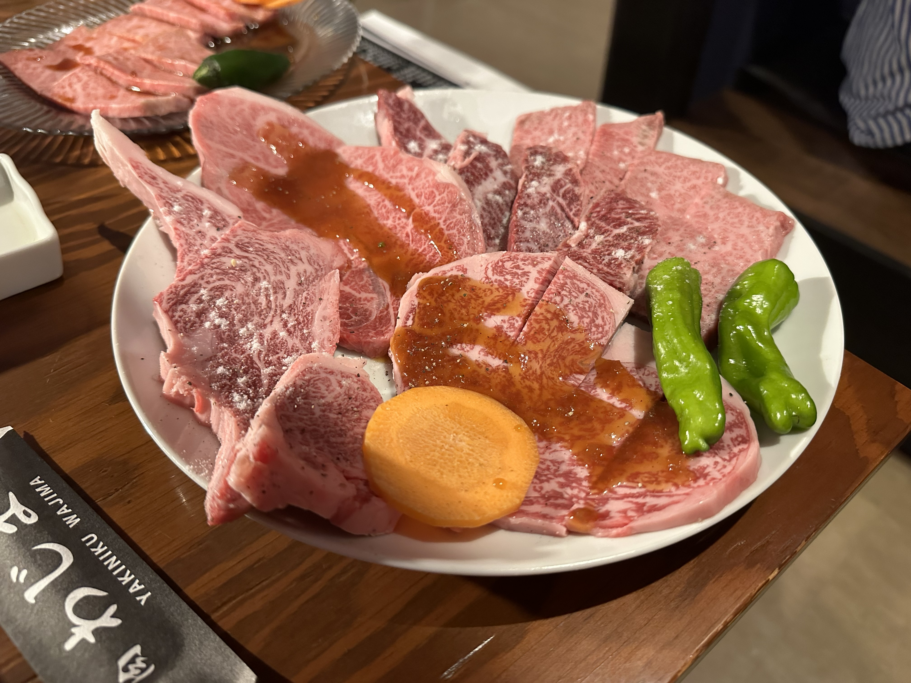
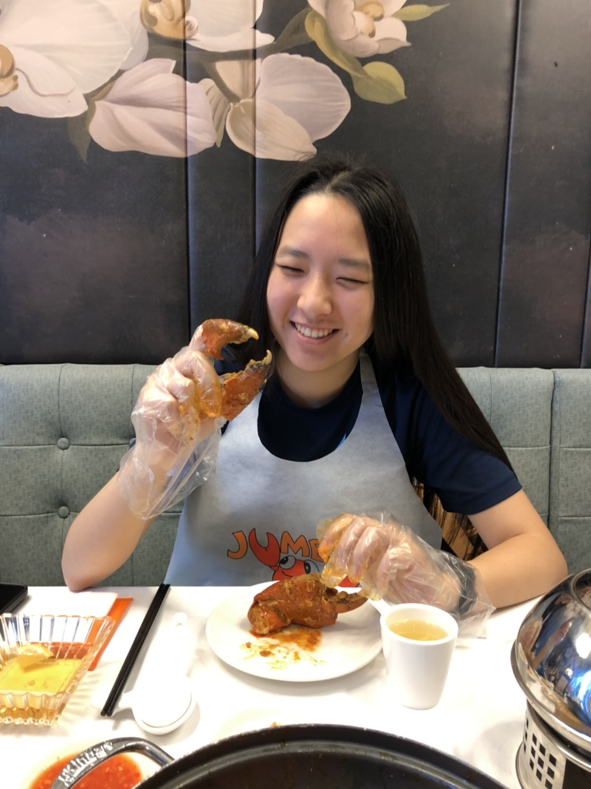

Why I love food: an acrostic
- F ortunate to grow up eating delicous homecooked meals by my skilled and hardworking mom.
- O ne good meal can turn a sad day into a bright one.
- O odles of opulent offerings of this Earth, oceanic or ordinary, I orally obsess over.
- D uh. And all the friends we made along the way.
Favorites/h3>
In no particular order.
- Chinese sweet and sour pork ribs.
- Sushi and sashimi, particularly salmon and scallop.
- Peking duck, wrapped with cucumber, plum sauce, thinkly sliced scallion, and sugar.
- Ramen, with thick and salty broth.
- Korean or Japanese BBQ.
- Asian KFC egg tarts. To die for.
- Lobster rolls.
DELISH and GORG *chef's kiss*
I share here some highlights of my consumption history.
Beef noodle soup, a classic Taiwanese dish. Hsinchu, Taiwan.

Chinese sweet and sour pork ribs. This particular one was my own cooking.

The golden trio of tuna sashimi. Southern harbor fish market in Taiwan.

A5 wagyu beef, before grilling. Hokkaido, Japan.

Mud crab. Enjoyed with my mom in Singapore.